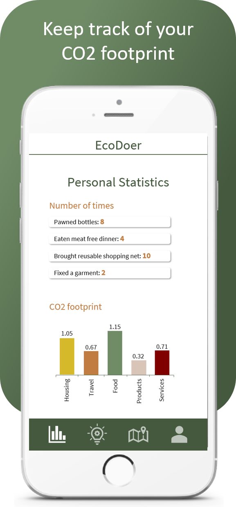
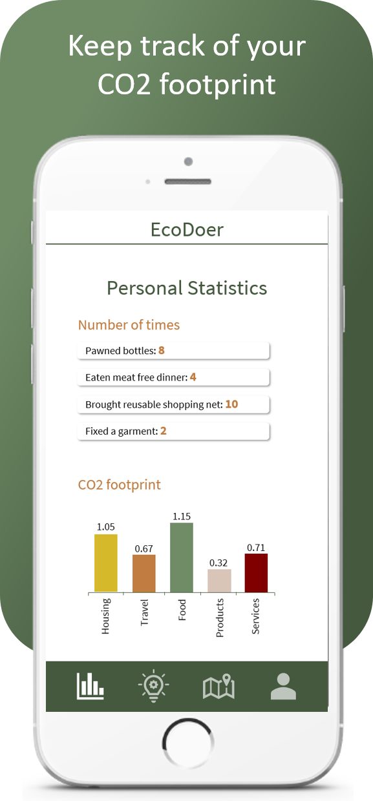

About EcoDoer
EcoDoer is an app which provides features to make it easier and more fun to choose an eco friendly way of living.
Badges can be unlocked by doing certain tasks, e.g. having a meat free dinner or fixing broken furniture. Help
to complete these tasks can be found under Tips & Tricks by watching DIY videos or looking through the daily tips.
A map helps the user to locate places that provide some kind of eco friendly service such as thrift stores,
recycling stations and local producers.
To keep track of every eco friendly task that has been done and to see
where to improve, personal statistics gives an overview of how the user is doing.
With EcoDoer, everyone can join
in on the common goal to a healthier planet.


 
